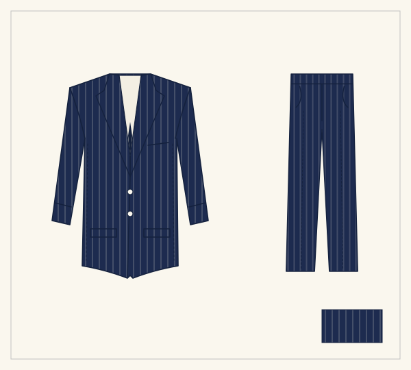

Caballero · Lámina I
El Ejecutivo
El traje que abre la temporada: dos botones, solapa de muesca y raya diplomática fina. Línea limpia para la oficina de todos los días.
- Piezas
- Saco y pantalón
- Tela
- Raya diplomática, azul marino
- Corte
- Dos botones, solapa de muesca
- Ocasión
- Oficina · uniforme directivo